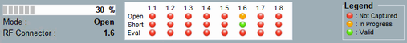

Important Settings and States
Below the result diagram, the measurement progress and the most important settings are displayed on the left.
On the right, the result states are indicated.

The path loss measurement is a single-shot measurement without repetition.
The progress bar shows the progress of the frequency sweep and thus the progress of the measurement.
See "Select Mode".
See "RF Routing".
There is one indicator per RF connector (columns) and per measurement mode (rows).
- Red icon (not captured)
There are no measurement results for this connector/mode. - Orange icon (in progress)
The measurement of these results is running. - Green icon (valid)
Results are available for this connector/mode.